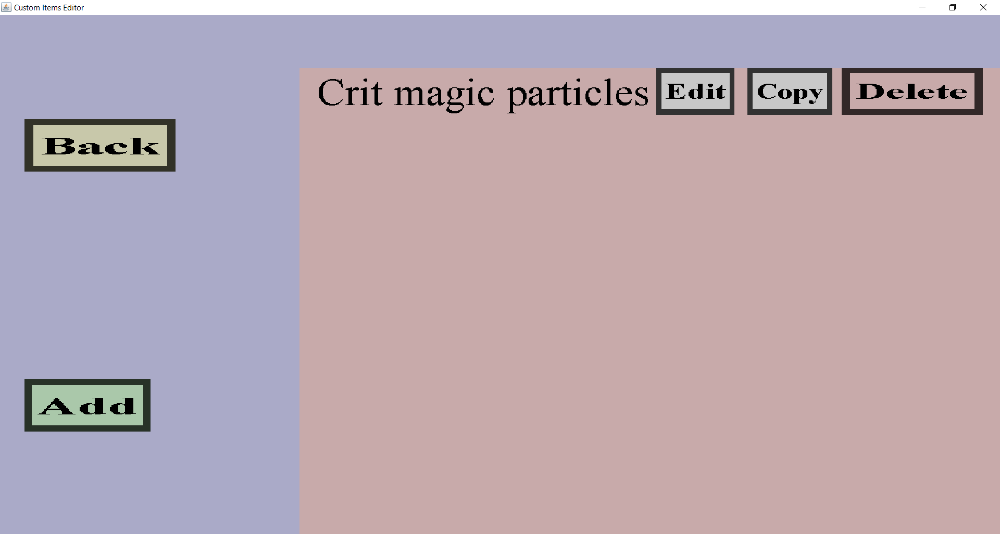

The effect overview can be used to view or modify a list of projectile effects.
This will either be the list of impact effects or the list of effects of an
in-flight effect wave.
If you have a single projectile effect that spawns magic crit particles, it should look like this:

On the left, there is a 'Back' button and an 'Add' button.
Additionally, there is an 'Edit', 'Copy' and 'Delete' button for each projectile effect in the effect
list you are viewing.
-
The 'Back' button will take you back to the menu you came from.
Unlike 'Cancel' buttons, no information will be lost if you click it.
-
The 'Add' button will take you to the effect creation menu
where you can choose a new projectile effect to add to this list of effects.
-
The 'Edit' button will take you to the effect edit menu for the corresponding projectile
effect. Which edit menu that will be depends on what kind of projectile effect you are about to edit.
-
The 'Copy' button will take you to the effect edit menu where you can edit a copy of the corresponding
projectile effect before adding it to this list of projectiles.
Which edit menu that will be depends on what kind of projectile effect you are about to edit.
-
The 'Delete' button will remove the corresponding projectile effect from this list.